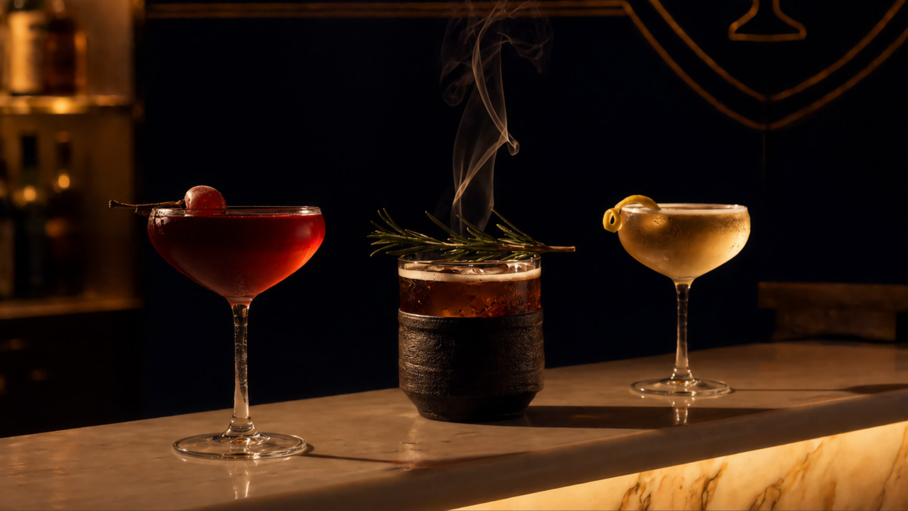
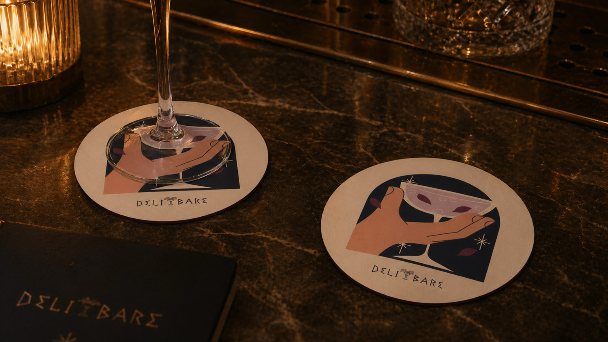
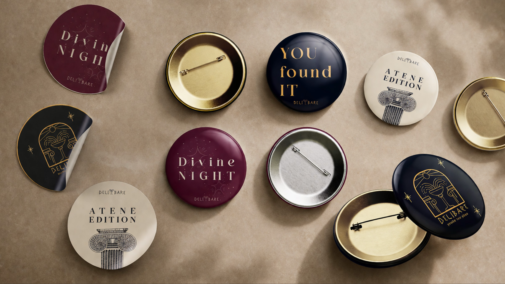
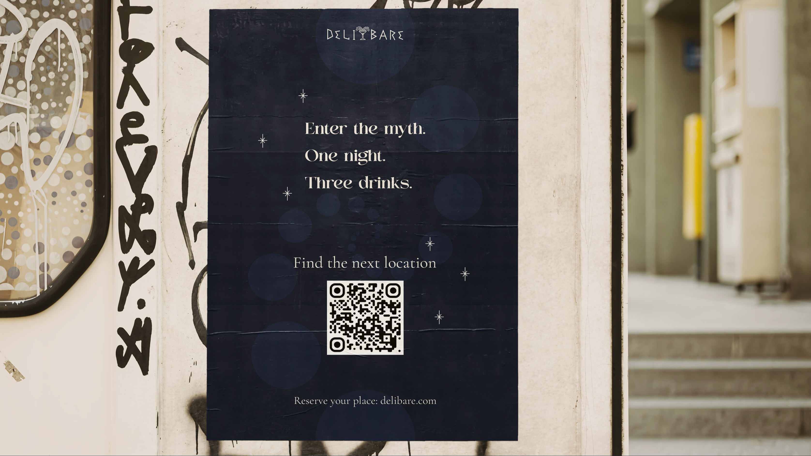
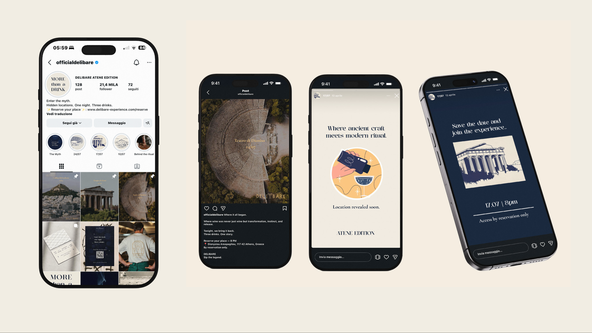
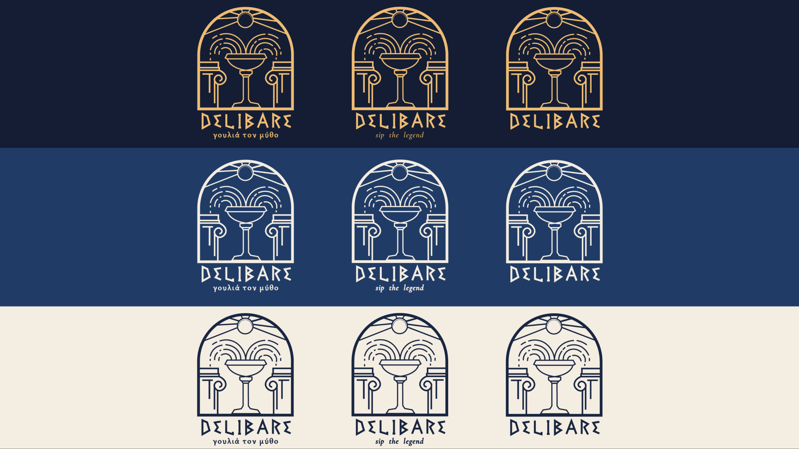
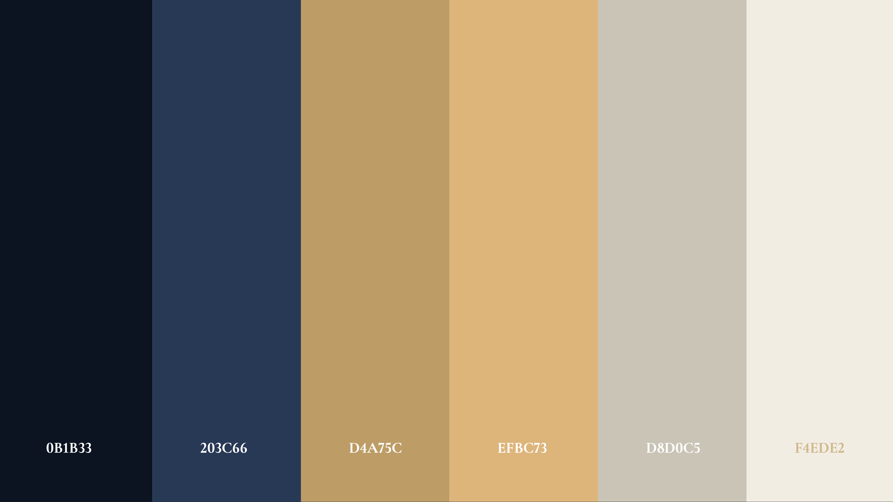
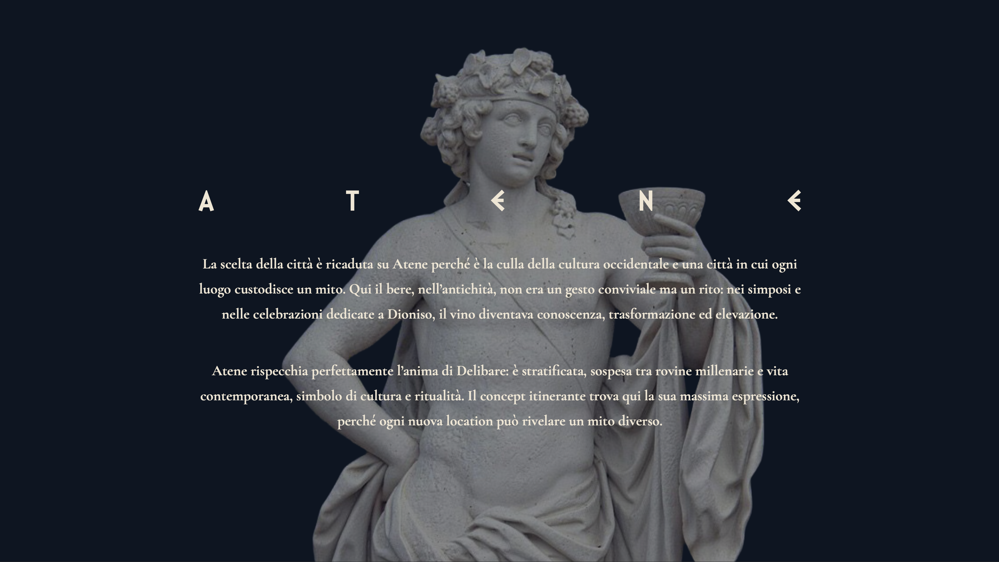

Progetti
Delibare
Un’identità visiva pensata per raccontare sapori, luoghi e storie.
Delibare è un progetto di brand identity sviluppato per un bar itinerante che prende vita ad Atene. Ogni elemento visivo collega il brand a un immaginario mediterraneo, caldo e contemporaneo.
Il sistema grafico lavora su tipografia, palette e applicazioni coordinate: logo, packaging, social e materiali fisici sono pensati per essere riconoscibili e facili da declinare.







